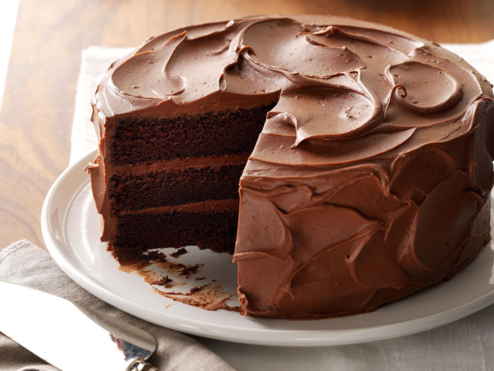

Chocolate cake is a dessert that has a chocolate flavor and chocolate frosting. The history of chocolate cake is not clear, but there are many stories about its invention. One report says that a chef in France made the first chocolate cake for Napoleon Bonaparte‘s wife, Josephine. Another story says that a woman in the United States named Sarah Lee invented chocolate cake in the 1800s.. more